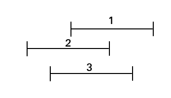

mst，以及 mst related
Boruvka
- 用途：\(O(m\log n)\) 求 mst。
过程：
- 考虑和 Kruskal、Prim 类似的孤立点 \(\to\) 加边 \(\to\) 树。
- 每一轮算法，对于当前的每个连通块，找到其连向其它连通块的边中最小的一条，并在这一轮后加入边集（用并查集维护连通块合并）。
- 重复执行该算法，最终找到 mst。
图源 OI Wiki - 复杂度：每一轮中，每个连通块都会被合并一次，故一轮之后现存连通块数量最坏情况下变为原来的一半。也即共执行 \(\log n\) 轮。复杂度 \(O(m\log n)\)。
优势：对于特殊边权的完全图 / 稠密图，边权并不由输入直接给定，而是由顶点计算得到，此时若可以依据性质直接找到连通块的最小边，则复杂度降低至 \(O(n\log n)\) 之类非常优秀的级别（注意并查集的 log 和 Boruvka 本身的 log 是平行的）。
『依据性质找到最小的边』的一个 Bonus：见 KDT + Boruvka 做法的 平面欧几里得最小生成树。
A - Jumping Around
https://www.luogu.com.cn/problem/CF1550F
- 本题就是『特殊边权完全图』的体现。定义任意两个点之间的边权为两个点相互跳需要的最小的 \(k=||x_0-x_1|-d|\)，那么只需求瓶颈路。
做 Boruvka 即可。考虑怎么求某个连通块的最小边，预处理出每个位置（包括空位）前 / 后第一个和自己颜色不同的非空位，每次 check \(i\pm d\)：
- 若该位置存在和当前位置不同颜色的点：连边。
- 否则，若该位置和当前位置颜色相同：转到刚刚求出的前驱、后继，选更小者连边。
- 否则该位为空。前驱、后继则转化为上面两种情况。
和双指针做法不同，似乎并不支持离散化，只能做到 \(O(V\log n)\)。
#include <bits/stdc++.h>
const int V = 1e6;
int main() {
#ifdef ONLINE_JUDGE
std::ios::sync_with_stdio(false);
std::cin.tie(nullptr), std::cout.tie(nullptr);
#else
std::freopen(".in", "r", stdin);
std::freopen(".out", "w", stdout);
const auto stime = std::chrono::steady_clock::now();
#endif
int n, q, s, d;
std::cin >> n >> q >> s >> d;
std::vector<int> a(n + 1), tab(V + 1);
for (int i = 1; i <= n; ++i)
std::cin >> a[i], tab[a[i]] = i;
std::vector<std::pair<int, int> > to(n + 1);
std::vector<std::vector<std::pair<int, int> > > g(n + 1);
std::vector<int> u(V + 1), pre(V + 1), nex(V + 1), mn(n + 1), f(n + 1), pos;
std::iota(f.begin() + 1, f.end(), 1);
std::function<int(int)> find = [&](int x) {
return x == f[x] ? x : f[x] = find(f[x]);
};
for (int tot = n; tot != 1; ) {
pos.clear();
for (int i = 1; i <= n; ++i) {
if (f[i] == i) {
mn[i] = 0x3f3f3f3f, to[i] = { 0, 0 };
pos.push_back(i);
}
u[a[i]] = find(i);
if (u[a[i - 1]] == u[a[i]])
pre[a[i]] = pre[a[i - 1]];
else
pre[a[i]] = a[i - 1];
}
for (int i = 1; i <= V; ++i)
if (!u[i])
pre[i] = u[i - 1] ? i - 1 : pre[i - 1];
nex[a[n]] = V + 1;
for (int i = n - 1; i; --i)
if (u[a[i + 1]] == u[a[i]])
nex[a[i]] = nex[a[i + 1]];
else
nex[a[i]] = a[i + 1];
nex[V] = V + 1;
for (int i = V - 1; i; --i)
if (!u[i])
nex[i] = u[i + 1] ? i + 1 : nex[i + 1];
for (int i = 1; i <= n; ++i) {
int x = a[i], now = 0x3f3f3f3f, pos = 0;
auto upd = [&](int x1) {
if (std::abs(std::abs(x - x1) - d) < now)
now = std::abs(std::abs(x - x1) - d), pos = x1;
return;
};
auto trans = [&](int x1) {
if (pre[x1])
upd(pre[x1]);
if (nex[x1] != V + 1)
upd(nex[x1]);
return;
};
std::function<void(int)> work = [&](int x1) {
if (u[x1] && u[x1] != u[x])
upd(x1);
else if (u[x1])
trans(x1);
else {
if (pre[x1])
work(pre[x1]);
if (nex[x1] != V + 1)
work(nex[x1]);
}
return;
};
work(std::max(1, x - d)), work(std::min(V, x + d));
if (now < mn[u[x]])
mn[u[x]] = now, to[u[x]] = { i, tab[pos] };
}
for (auto i : pos) {
int j = u[a[to[i].second]], x = to[i].first, y = to[i].second;
if (find(i) != find(j)) {
--tot;
f[find(i)] = find(j);
g[x].emplace_back(y, mn[i]), g[y].emplace_back(x, mn[i]);
}
}
}
std::vector<int> res(n + 1);
std::function<void(int, int)> DFS = [&](int x, int fa) {
for (auto [i, w] : g[x])
if (i != fa) {
res[i] = std::max(res[x], w);
DFS(i, x);
}
return;
};
DFS(s, -1);
for (int x, k; q--; ) {
std::cin >> x >> k;
std::cout << ((res[x] <= k) ? "Yes" : "No") << '\n';
}
#ifndef ONLINE_JUDGE
std::cerr << std::fixed << std::setprecision(6) << std::chrono::duration<double> (std::chrono::steady_clock::now() - stime).count() << "s\n";
#endif
return 0;
}B - Parametric MST
https://www.luogu.com.cn/problem/CF1656F
- 可以猜到能够把答案写出来，但是发现太抽象了以至于不太好模拟。
- 首先需要猜到题目给的 \(w\) 是可以继续化的，注意到 \(a_i\cdot a_j+t(a_i+a_j)\) 可以写成 \((a_j+t)\cdot a_i+t\cdot a_i\) 的一次函数形式，一个很重要的思路是放弃模拟 mst 转而从点出发贪心
\(t\) 会影响的是斜率 \(a_j+t\)，所以应该根据 \(a_j+t\) 的正负情况选择贪心策略。
当 \(a_j+t\le 0\) 时，使 \(a_j\) 向 \(a_{\max}\) 连边，否则向 \(a_{\min}\) 连边。
这其实是 Boruvka 第一轮的过程；此时只剩至多两个连通块，连边方式也就讨论一下 \(a_1+t\) 和 \(a_n+t\) 的正负，然后很显然了。
当 \(t\) 足够小时，所有点都会连向 \(a_{\max}\)；反之，当 \(t\) 足够大时，所有点都会连向 \(a_{\min}\)。
对于第一种情况，mst 的权为 \(a_{\max}\cdot (s - a_{\max}) + t\cdot ((n-1)\cdot a_{\max}+s-a_{\max})\)；第二种情况，mst 的权为 \(a_{\min}\cdot (s - a_{\min}) + t\cdot ((n-1)\cdot a_{\min}+s-a_{\min})\)，check \(t\) 的系数即可判
INF。通过上面一种情况，可以注意到 \(t\in[-a_{\max},-a_{\min}]\)，进一步需要猜到 \(t\) 取某个 \(-a_i\)。由于连的边是很已知的，可以发现当 \(t\) 夹在两个连续的 \(-a\) 之间时，mst 的连边情况是不变的。
显然此时 mst 的权是一个关于 \(t\) 的一次函数，故 check 两端点即可。排序即可快速 check。
由于此时第二轮 Boruvka 要连的边一定是 \((a_1,a_n)\)，连上即可。
#include <bits/stdc++.h>
int main() {
#ifdef ONLINE_JUDGE
std::ios::sync_with_stdio(false);
std::cin.tie(nullptr), std::cout.tie(nullptr);
#else
std::freopen(".in", "r", stdin);
std::freopen(".out", "w", stdout);
const auto stime = std::chrono::steady_clock::now();
#endif
int T;
for (std::cin >> T; T--; ) {
int n;
std::cin >> n;
std::vector<long long> a(n + 1), s(n + 1);
for (int i = 1; i <= n; ++i)
std::cin >> a[i];
std::sort(a.begin() + 1, a.end());
std::partial_sum(a.begin() + 1, a.end(), s.begin() + 1);
if ((n - 1) * a[n] + s[n - 1] < 0ll || (n - 1) * a[1] + s[n] - a[1] > 0ll)
std::cout << "INF\n";
else {
long long res = -1e18;
for (int i = 1; i <= n; ++i) {
auto t = -a[i], sl = s[i] - a[1], sr = s[n - 1] - s[i];
res = std::max(res, a[n] * sl + a[1] * sr + t * ((i - 1) * a[n] + (n - 1 - i) * a[1] + sl + sr) + a[1] * a[n] + t * (a[1] + a[n]));
}
std::cout << res << '\n';
}
}
#ifndef ONLINE_JUDGE
std::cerr << std::fixed << std::setprecision(6) << std::chrono::duration<double> (std::chrono::steady_clock::now() - stime).count() << "s\n";
#endif
return 0;
}C - Star MST
https://www.luogu.com.cn/problem/CF1657E
- 模拟 Kruskal 的过程，在边权 \(w\) 处出现 \((1,x)\)，那么允许在 \(\ge w\) 处出现其他与 \(x\) 相关的边。
- 会有一个比较暴力的想法，设 \(f_{i,j,l}\) 表示已经分配完边权 \(i\)，共分配了 \(j\) 条与 \(1\) 相关的边，还剩下 \(l\) 条空闲边可以放，会有一个 \(O(k\cdot n^4)\) 的转移。
考虑优化。容易注意到没必要存 \(l\) 而是可以当场完成分配，但这样就导致 \(i\) 维的限制转化为『恰好』，需要额外枚举一轮。总之可以得到：
\[ f_{i,j}=\sum_{d_i=1}^{i}\sum_{d_j=1}^{j} C_{n-(j-d_j)}^{d_j}\times f_{i-d_i,j-d_j}\times (k-i+1)^{C_{d_j}^2+d_j\times (j-d_j)} \]
此时复杂度为 \(O(k^2n^2\log k)\)，依然不够看；注意到交换求和顺序可以前缀和优化，故：
\[ f_{j, i}=\sum_{d_j=1}^{j} C_{n-(j-d_j)}^{d_j}\times (k-i+1)^{C_{d_j}^2+d_j\times (j-d_j)}\times \sum_{d_i=1}^{i}f_{j - d_j,i-d_i} \]
复杂度 \(O(kn^2\log k)\)。\(\log\) 来源于快速幂。当然可以考虑预处理优化掉 log，whatever.
#include <bits/stdc++.h>
const int mod = 998244353;
int main() {
#ifdef ONLINE_JUDGE
std::ios::sync_with_stdio(false);
std::cin.tie(nullptr), std::cout.tie(nullptr);
#else
std::freopen(".in", "r", stdin);
std::freopen(".out", "w", stdout);
const auto stime = std::chrono::steady_clock::now();
#endif
int n, k;
std::cin >> n >> k;
std::vector<std::vector<long long> > C(n + 1, std::vector<long long> (n + 1));
for (int i = 0; i <= n; ++i) {
C[i][0] = 1ll;
for (int j = 1; j <= i; ++j)
C[i][j] = (C[i - 1][j] + C[i - 1][j - 1]) % mod;
}
auto qkp = [&](long long x, int y) {
auto res = 1ll;
for (; y; (x *= x) %= mod, y >>= 1)
if (y & 1)
(res *= x) %= mod;
return res;
};
std::vector<std::vector<long long> > s(n, std::vector<long long> (k + 1));
for (int i = 0; i <= k; ++i)
s[0][i] = 1ll;
for (int j = 1; j < n; ++j)
for (int i = 1; i <= k; ++i) {
for (int dj = 1; dj <= j; ++dj)
s[j][i] += C[n - (j - dj) - 1][dj] * qkp(k - i + 1, (C[dj][2] + dj * (j - dj)) % mod) % mod * s[j - dj][i - 1] % mod;
(s[j][i] += s[j][i - 1]) %= mod;
}
std::cout << s[n - 1][k] << '\n';
#ifndef ONLINE_JUDGE
std::cerr << std::fixed << std::setprecision(6) << std::chrono::duration<double> (std::chrono::steady_clock::now() - stime).count() << "s\n";
#endif
return 0;
}D - Smooth Sailing (Hard Version)
https://www.luogu.com.cn/problem/CF1920F2
实在十分熟悉，之前在哪道 CF 题遇到过这个 trick，然而没什么回忆线索，遂放弃
一个连通块被包围的充要条件：从连通块边缘任意一个点向任意方向发一条射线，垂直经过路径奇数次。
垂直：即切线不切换奇偶状态。
这个东西其实来源于计算几何，但是我的数学水平只停留在听说过计算几何四个字的水平，故不深究了。
这种网格图上的图论问题，可以往欧拉定理（\(v-e+f=2\)），计算几何考虑，
怎么在保证这一点的前提下求 mst 呢？答案是丢到状态里。
找一个最靠左的点往左边引一条射线并标记沿路经过的点。令 \((x, y, 0/1)\) 表示走到 \((x, y)\)，经过关键点偶数次 / 奇数次。边权啥的也没什么好说的，点权前移即可。
询问的转化反而不太好想，其实就是问 \((x,y,0)\) 到 \((x,y,1)\) 的瓶颈路。
巧得有些不太自然，然而并没找到合理的解释。
询问建个 Kruskal 重构树找 LCA 即可，复杂度 \(O(nm\log nm)\)。
#include <bits/stdc++.h>
const int dir[][2] = {{ -1, 0 }, { 1, 0 }, { 0, -1 }, { 0, 1 }};
int main() {
#ifdef ONLINE_JUDGE
std::ios::sync_with_stdio(false);
std::cin.tie(nullptr), std::cout.tie(nullptr);
#else
std::freopen(".in", "r", stdin);
std::freopen(".out", "w", stdout);
const auto stime = std::chrono::steady_clock::now();
#endif
int n, m, q;
std::cin >> n >> m >> q;
int cnt = 2 * n * m;
std::vector<int> W(1);
std::vector<std::vector<int> > g(2 * n * m + 1);
auto fun = [&](int i, int j, int k) {
return k * n * m + (i - 1) * m + j;
};
{
int px = 0, py = m + 1;
std::vector<std::vector<char> > a(n + 1, std::vector<char> (m + 1));
for (int i = 1; i <= n; ++i)
for (int j = 1; j <= m; ++j) {
std::cin >> a[i][j];
if (a[i][j] == '#' && j < py)
px = i, py = j;
}
std::vector<std::vector<int> > w(n + 1, std::vector<int> (m + 1, 0x3f3f3f3f));
{
std::queue<std::pair<int, int> > q;
for (int i = 1; i <= n; ++i)
for (int j = 1; j <= m; ++j)
if (a[i][j] == 'v')
q.emplace(i, j), w[i][j] = 0;
for (; !q.empty(); ) {
auto [x, y] = q.front();
q.pop();
for (auto [fx, fy] : dir) {
int nx = x + fx, ny = y + fy;
if (nx >= 1 && nx <= n && ny >= 1 && ny <= m && w[nx][ny] == 0x3f3f3f3f) {
w[nx][ny] = w[x][y] + 1;
q.emplace(nx, ny);
}
}
}
}
struct edge { int u, v, w; };
std::vector<edge> e;
for (int i = 1; i <= n; ++i)
for (int j = 1; j <= m; ++j)
if (a[i][j] != '#') {
if (j != m && a[i][j + 1] != '#') {
e.push_back({ fun(i, j, 0), fun(i, j + 1, 0), std::min(w[i][j], w[i][j + 1]) });
e.push_back({ fun(i, j, 1), fun(i, j + 1, 1), std::min(w[i][j], w[i][j + 1]) });
}
if (i != n && a[i + 1][j] != '#') {
if (i + 1 == px && j <= py) {
e.push_back({ fun(i, j, 0), fun(i + 1, j, 1), std::min(w[i][j], w[i + 1][j]) });
e.push_back({ fun(i, j, 1), fun(i + 1, j, 0), std::min(w[i][j], w[i + 1][j]) });
}
else {
e.push_back({ fun(i, j, 0), fun(i + 1, j, 0), std::min(w[i][j], w[i + 1][j]) });
e.push_back({ fun(i, j, 1), fun(i + 1, j, 1), std::min(w[i][j], w[i + 1][j]) });
}
}
}
std::sort(e.begin(), e.end(), [&](edge &x, edge &y) { return x.w > y.w; });
std::vector<int> f(2 * n * m + 1);
std::iota(f.begin() + 1, f.end(), 1);
std::function<int(int)> find = [&](int x) {
return x == f[x] ? x : f[x] = find(f[x]);
};
for (auto [x, y, w] : e)
if (find(x) != find(y)) {
f.push_back(++cnt);
W.push_back(w), g.emplace_back();
g[cnt].push_back(find(x)), g[cnt].push_back(find(y));
f[find(x)] = f[find(y)] = cnt;
}
}
std::vector<int> fa(cnt + 1), siz(cnt + 1), dep(cnt + 1), son(cnt + 1), top(cnt + 1);
std::function<void(int)> DFS = [&](int x) {
siz[x] = 1;
for (auto i : g[x]) {
dep[i] = dep[x] + 1;
DFS(i), fa[i] = x;
siz[x] += siz[i];
if (siz[i] > siz[son[x]])
son[x] = i;
}
return;
};
dep[1] = 1, DFS(cnt);
DFS = [&](int x) {
if (son[x])
top[son[x]] = top[x], DFS(son[x]);
for (auto i : g[x])
if (i != son[x])
top[i] = i, DFS(i);
return;
};
top[cnt] = cnt, DFS(cnt);
auto ask = [&](int x, int y) {
for (; top[x] != top[y]; x = fa[top[x]])
if (dep[top[x]] < dep[top[y]])
std::swap(x, y);
return dep[x] < dep[y] ? x : y;
};
for (int x, y; q--; ) {
std::cin >> x >> y;
std::cout << W[ask(fun(x, y, 0), fun(x, y, 1)) - 2 * n * m] << '\n';
}
#ifndef ONLINE_JUDGE
std::cerr << std::fixed << std::setprecision(6) << std::chrono::duration<double> (std::chrono::steady_clock::now() - stime).count() << "s\n";
#endif
return 0;
}E - Turtle and Intersected Segments
https://www.luogu.com.cn/problem/CF1981E
考虑绝对值的几何意义，很容易发现有的边注定是无效的：
 如图中三条线段形成一个环，权值如图，排除掉权值最大的边，发现只会连权值相邻的边 - 换句话说，对于数轴上的这个点，仅需把覆盖之的所有线段序列按 \(a\) 排序，连接相邻者即可。怎么更快地实现这个过程呢？
发现只需要在这个线段序列变化的时候连新的边，故用 multiset 维护这个序列，扫一遍，在加入新线段时连接它和前驱后继即可（结合前文论述发现删除的时候不用管）。
#include <bits/stdc++.h>
int main() {
#ifdef ONLINE_JUDGE
std::ios::sync_with_stdio(false);
std::cin.tie(nullptr), std::cout.tie(nullptr);
#else
std::freopen(".in", "r", stdin);
std::freopen(".out", "w", stdout);
const auto stime = std::chrono::steady_clock::now();
#endif
int T;
for (std::cin >> T; T--; ) {
int n;
std::cin >> n;
struct node { int l, r, v; };
struct edge { int u, v, w; };
std::vector<edge> e;
std::vector<node> a(n + 1);
for (int i = 1; i <= n; ++i)
std::cin >> a[i].l >> a[i].r >> a[i].v;
std::sort(a.begin() + 1, a.end(), [&](node &x, node &y) { return x.l < y.l; });
std::set<std::tuple<int, int, int> > t;
std::set<std::pair<int, int> > now;
for (int i = 1; i <= n; ++i) {
for (; !t.empty();) {
auto [r, v, id] = *t.begin();
if (r >= a[i].l)
break;
now.erase(std::make_pair(v, id));
t.erase(t.begin());
}
auto p = now.lower_bound(std::make_pair(a[i].v, i));
if (p != now.end())
e.push_back({ i, p->second, p->first - a[i].v });
if (p != now.begin()) {
--p;
e.push_back({ i, p->second, a[i].v - p->first });
}
t.emplace(a[i].r, a[i].v, i), now.emplace(a[i].v, i);
}
std::sort(e.begin(), e.end(), [&](edge &x, edge &y) { return x.w < y.w; });
auto res = 0ll;
std::vector<int> f(n + 1);
std::iota(f.begin() + 1, f.end(), 1);
std::function<int(int)> find = [&](int x) {
return x == f[x] ? x : f[x] = find(f[x]);
};
int cntm = 0;
for (auto [u, v, w] : e)
if (find(u) != find(v)) {
f[find(u)] = find(v);
res += w, ++cntm;
}
if (cntm == n - 1)
std::cout << res << '\n';
else
std::cout << -1 << '\n';
}
#ifndef ONLINE_JUDGE
std::cerr << std::fixed << std::setprecision(6) << std::chrono::duration<double> (std::chrono::steady_clock::now() - stime).count() << "s\n";
#endif
return 0;
}F - Digital Village (Extreme Version)
https://www.luogu.com.cn/problem/CF2021E3
- 为啥会想到 DP（。）前面不都是神秘建图题吗（。）
会发现待求即为重构树上 LCA 的权值，但题设中的 Key 是设置了服务器的结点，二者不匹配。如果直接设 \(f_{x,j}\) 表示 \(x\) 子树内设了 \(j\) 个服务器，感觉不太可行。
当然也可能是因为我没做过重构树上的 DP。Whatever.
实际上需要结合重构树的性质考虑。发现一个子树内部不能消化，当且仅当